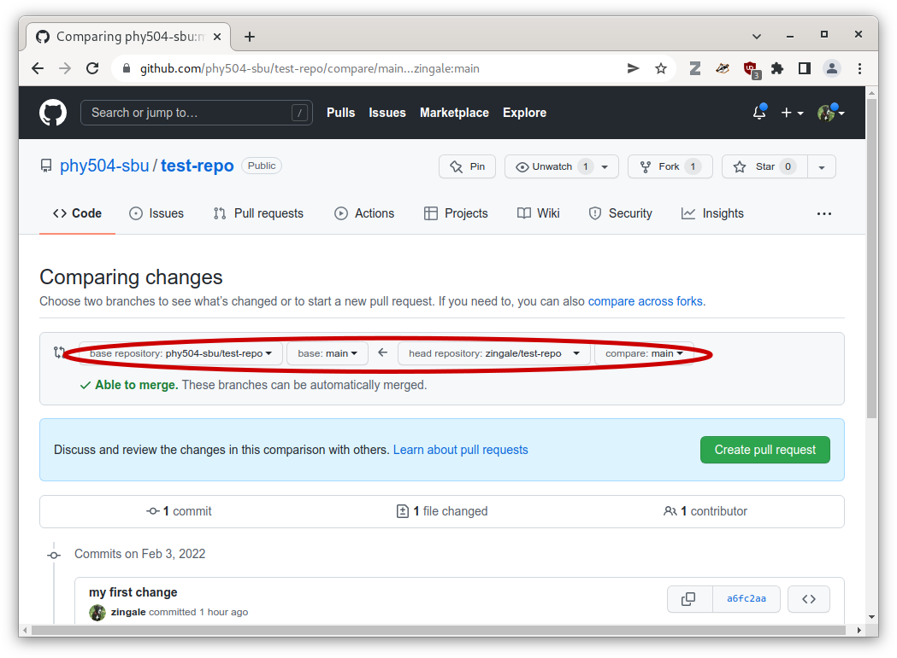

github¶
Github provides a web-based way to interact with git repositories. At its heart it hosts a bare repo that we can push-pull to/from, but it also provides features to make it easier for users to request their changes be incorporated.
Creating a repository on github¶
Let’s start by creating a new git repository using github’s web interface. Start on your github home page and click on the “+” icon and select “New repository”:
Now we give the repository a name. Let’s use our initials, followed
by _class_repo, so for me, it will be mz_class_repo.
By default the repo will be public, which means anyone on the internet can see the contents – that’s what we want.
Finally, check the box to add a README file – this means that our repository will
not be empty initially.
Our project is now found at: https://github.com/username/reponame/, where username is your Github username and reponame is the name of the repository you just created.
SSH interlude¶
Github works best is we communicate via secure shell or SSH. This is the same protocol we used for connecting to the portal MathLab machines.
There is some nice documentation describing key pairs in the Software Carpentry Create an SSH key pair section.
Here’s how we will set things up:
A the bash prompt generate a new key pair:
ssh-keygen -t ed25519The
-toption picks a secure encryption method.It will ask you for a passpharse – just hit “Enter” to keep it empty (if other people had access to your account, the you would want to pick a passphrase).
If you do
ls -l ~/.sshyou’ll see 2 files:
id_ed25519andid_ed25519.pubthis is the private and public key for encryption.Note
Never share your private key (
id_ed25519) with anyone.Our public key (
id_ed25519.pub) is meant to be public, and we can give it to places we want to communicate with, like githubGo to you Github profile SSH keys settings: https://github.com/settings/keys
Click on the New SSH key button and:
give a title which is descriptive of the machine you are using, like
MathLabcopy and paste the contents of
id_ed25519.pubinto the key text box. You can see the contents by doing:cat ~/.ssh/id_ed25519.pubClick on
Add SSH key
Test things out:
ssh -T git@github.comIt will ask you if we want to save the fingerprint – say “yes”, and then it should report:
Hi zingale! You've successfully authenticated, but GitHub does not provide shell access.
That means everything is working.
Note
Since your home directory is not shared across the MathLab machines, you will need to do this each time you sit down on a different machine.
Also, in case our directory gets purged (which hasn’t happened yet…) we would need to regenerate a key and update github.
We’ll deal with that as it arises. I will also explore whether it is wise to link these from our shared MySBFiles drive.
Working remotely¶
Now we can git clone this repo. From the github project page, click on the code button.

Copy the string in the text box there and then on your command line clone the repo as:
git clone git@github.com:zingale/mz_class_repo.git
(replacing my repo and username with your own).
Now we can go into our repo and look around. Notice that there is a
.git/ directory. Also look at the remotes:
git remote -v
origin git@github.com:zingale/mz_class_repo.git (fetch)
origin git@github.com:zingale/mz_class_repo.git (push)
This is just like the example or remotes we did previously, except now github is acting as our remote.
This means that we call push to github and pull from there.
As a single user, this will allow you to develop from any computer and keep the code base in sync across all of them.
If the project has multiple developers, this can be where all of the developers sync up their projects.
README.md is special¶
The web interface that github provides to our repo has a number of features.
First, the README.md file is always displayed on the main project
page. This is where you can put descriptions of what your project is,
how people can contribute, even share the status of testing and
documentation builds (we’ll talk about those later in class).
This file is in github-flavored Markdown format (that’s what the
.md extension signifies). Markdown allows you to do basic formatting.
Here’s an example of what you can do in a README.md from one of my
projects: https://github.com/pynucastro/pynucastro
Pull requests¶
Github allows you to give permissions to users to contribute to a repository (read, write, or admin access). But the best type of workflow is one where users don’t push directly to the git repo. Instead it is based around pulls.
How do we contribute to a project that we don’t own?
Here’s a github organization for our class: https://github.com/phy504-sbu
and here’s a simple repo in this organization: https://github.com/phy504-sbu/test-repo
An organization is meant to be used by a collection of developers who can all have different access permissions. It provides tools for managing who can do different things to the repos under its control.
Let’s clone this repo:
git clone git@github.com:phy504-sbu/test-repo.git
cd test-repo
Now, let’s each try to add a file of the form username.txt containing your full name. Ex:
echo Michael Zingale > zingale.txt
git add zingale.txt
git commit
Now try to push it to the repo we clone:
git push
what happened?
The issue is that you don’t have write permission to that repo, since I own it. So you are denied access.
This is okay. The workflow that github emphasizes is one based around pulls not pushes, so let’s see how we do that.
First, we need to fork the repo – this creates a clone under our control that we can do with as we please. Click on the “fork” button.

It may ask you where you want the fork to life – you want it to live under your profile / username.
This will bring you to a new github page, displaying the fork, with a URL that should look something like: https://github.com/zingale/test-repo
Now click on the code button and copy the SSH location.
We want to add this fork as a new remote:
git remote add myfork git@github.com:zingale/test-repo.git
(again, make sure you replace that with the link to your repo).
Now you can do:
git push myfork
If you reload your github page, you should see your change there.
Now we can do all pull-request. Select “pull requests”

Then click on the “New pull request” button, and you’ll see something like:
This is showing that you are asking to merge the changes in your fork into the
class test-repo repository.
Click on create pull request, type in a comment about what this does, and then click on the create pull request button again.
Now it is out of your hands.
The owner of the class repo (me) will get a notification that you want to incorporate your changes into the class repo, and I can merge them via the github web tools.
The overall workflow that we did: fork, push to our fork, issue a PR, looks like:

Our class notes github¶
Let’s take a tour of our class notes on github: https://github.com/zingale/phy504
There are a lot of other features that github provides that we will explore later in the semester, including:
github actions : automating some workflows (like testing) on our code
github pages : building and hosting web pages for our project